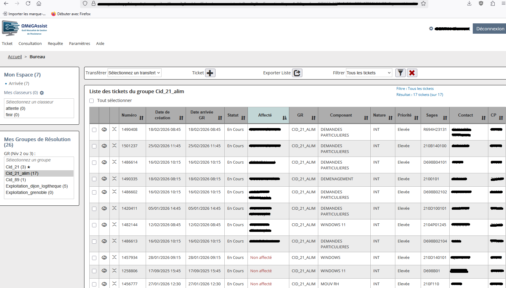

Projet 1 — Gestion des incidents et demandes utilisateurs
Participation au traitement des incidents et demandes utilisateurs à l’aide de l’outil OmegAssist. Cette mission comprenait la prise en charge, l’analyse, le diagnostic, l’intervention, le suivi et la clôture des tickets. Plusieurs cas ont été traités, comme le renouvellement de certificats VPN, la mise à jour de LibreOffice 2025, l’installation de Circl et la mise en place d’une BALF.
Contexte
Dans le cadre de mes missions au support informatique, j’ai participé à la gestion et au traitement des incidents et demandes utilisateurs à l’aide de l’outil de ticketing OmegAssist. L’objectif était de rétablir rapidement un fonctionnement normal des postes de travail tout en assurant un suivi rigoureux et une traçabilité des actions réalisées.
Démarche
- Consultation des tickets ouverts et prise en compte du contexte.
- Analyse de la demande ou de l’incident signalé.
- Diagnostic à l’aide de vérifications et de tests.
- Intervention par correction, paramétrage, installation ou mise à jour.
- Suivi des actions réalisées dans l’outil de ticketing.
- Validation et clôture après confirmation du bon fonctionnement.
Activités réalisées
Renouvellement de certificats VPN
Objectif : rétablir l’accès distant pour les agents en télétravail.
Action : renouvellement ou réinstallation des certificats, vérification de la configuration et test de connexion.
Résultat : accès VPN rétabli et validé avec l’utilisateur.
Mise à jour LibreOffice 2025
Objectif : assurer l’accès à une version récente et sécurisée du logiciel.
Action : mise à jour ou installation, puis vérification du bon fonctionnement.
Résultat : application opérationnelle et correctement mise à jour.
Installation de Circl
Objectif : rendre le logiciel disponible et utilisable sur le poste de travail.
Action : installation, configuration et tests de fonctionnement.
Résultat : logiciel correctement installé et prêt à l’usage.
Mise en place d’une BALF
Objectif : créer une boîte mail fonctionnelle pour un usage collectif.
Action : mise en place, configuration et tests d’envoi/réception.
Résultat : BALF opérationnelle pour les utilisateurs concernés.
Résultats
Les incidents et demandes ont été traités efficacement, permettant aux utilisateurs de retrouver rapidement un fonctionnement normal. Les opérations de maintenance, d’installation, de mise à jour et de configuration ont contribué à maintenir un environnement de travail stable et opérationnel.
Preuves
Captures d’écran illustrant l’outil de ticketing et une opération réalisée.
OmegAssist
Exemple de ticket traité dans l’outil de support (en masquant les informations sensibles).
